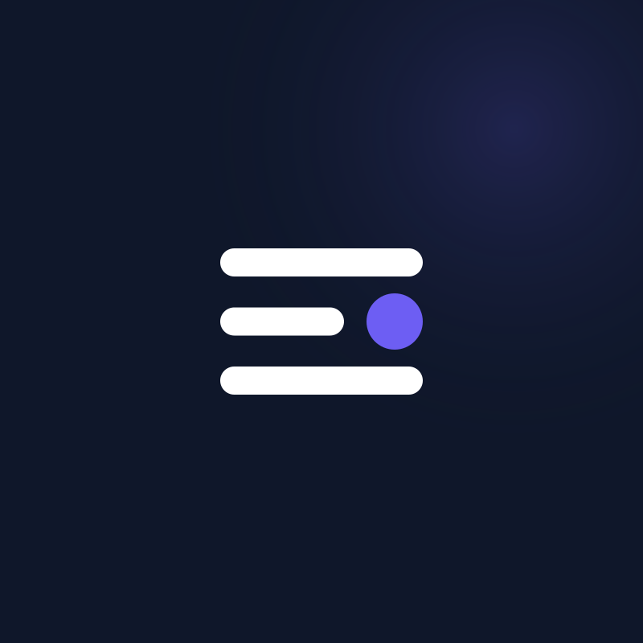
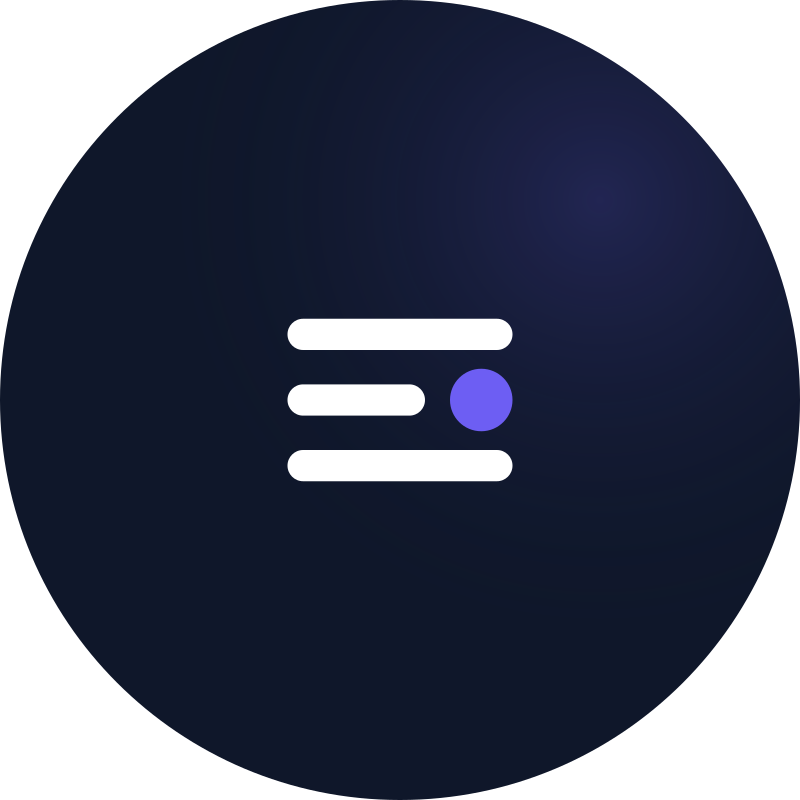
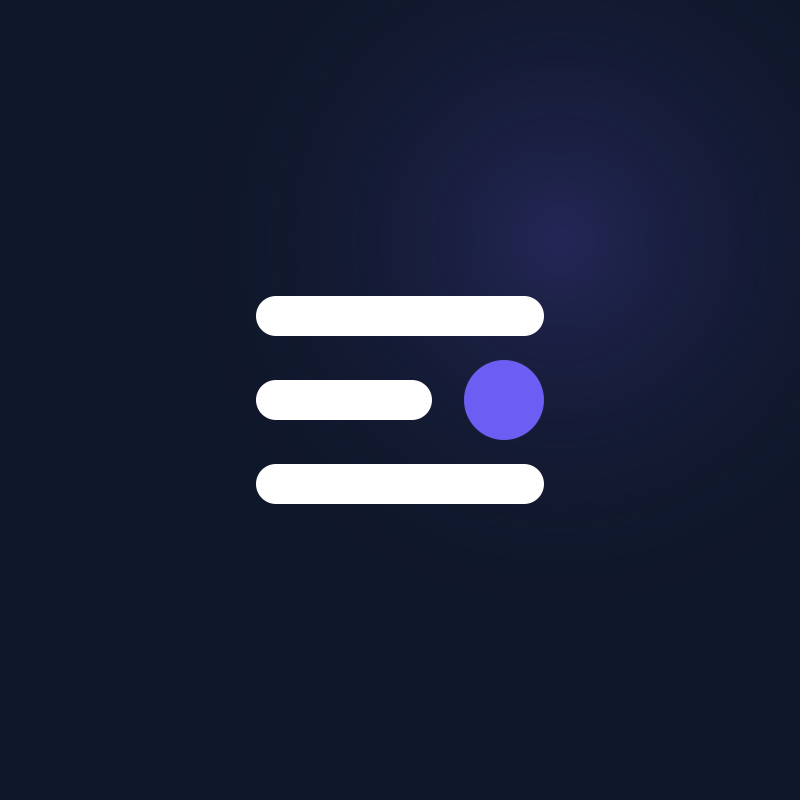

Formatos para redes sociales y perfiles digitales
Fotos de perfil

Twitter, Facebook, LinkedIn

Sin recorte · margen amplio

Icono optimizado para IG
Los archivos SVG están a 800×800. Para subir a redes, exporta a PNG a 400×400 o superior.
Portada horizontal
Portada general — 1500×500
Banner LinkedIn
LinkedIn — 1584×396 (ratio 4:1)
LinkedIn recorta el banner según el dispositivo. El logo y el texto están posicionados en la zona segura izquierda.